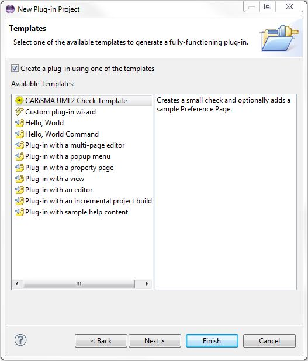
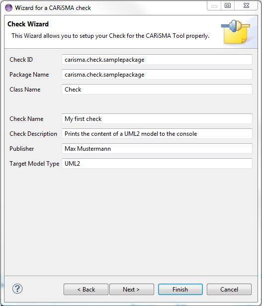

Creating a Plugin Project containing CARiSMA Checks
- Create a new Plug-in Project
- New → Other → Plug-in Development → Plug-in Project

Figure: New plug-in project wizard
- Enter your plugin name. The convention is "carisma.check.[pluginName]".

Figure: New Plug-in project wizard (cont.)
- Click Next.
- Enter the metadata for your plugin. Activator code is executed when the plugin is started.

Figure: New Plug-in project wizard content
- Click Next.
- Select the CARiSMA UML2 Check Template.

Figure: New Plug-in project wizard templates
- Click Next.
Note: If you choose to use an Activator at a later time, you have to fix the imports of the Activator class manually.
The default values in the following steps may mostly be altered at will, as they don't affect the look or
behavior of the plugin. The exception of the rule are the Target Model Type and Page Name values.
- Fill out the missing fields.
- Check ID is a unique ID for your Check. You may choose the package name as the Check ID.
- Package Name is the name of your Package.
- Class Name is the name of your Java class implementing the check.
- Plugin Name is the name of the plugin as part of the CARiSMA project.
- Publisher should be your name or the name of your company.
- Target Model Type is the Model-Type your check will work with.

Figure: New CARiSMA wizard
- Click Next.
- If you want to create a preference page containing check-wide settings, check the corresponding option.
- Select a page name. Class Name and Package Name are the java Class Name/Package Name.

Figure: New CARiSMA wizard (cont.)
- Click Finish to create your first CARiSMA check!